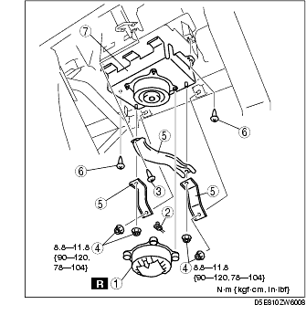
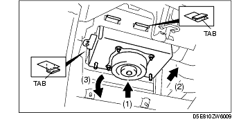
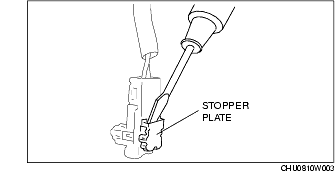

Workshop Manual ➭ RESTRAINTS ➭ AIR BAG SYSTEM ➭ PASSENGER-SIDE AIR BAG MODULE REMOVAL/INSTALLATION
PASSENGER-SIDE AIR BAG MODULE REMOVAL/INSTALLATION
id081000801900
{: #wp1059779}
Warning
• Handling the air bag module improperly can accidentally deploy the air bag module, which may seriously injure you. Read the service warnings and cautions before handling the air bag module. (See SERVICE WARNINGS.) (See SERVICE CAUTIONS.) {: #wp1059806}• If the passenger-side air bag module is installed with debris in the module, it may be scattered when the air bag module operates (deploys), causing injury. Verify that there is no debris in the passenger-side air bag module before installation. {: #wp1059814}• If a damaged passenger-side air bag module is installed, the vehicle may be damaged or the passenger may be injured when the air bag module operates (deploys). Verify that the passenger-side air bag has no damage before installation.
-
Turn the ignition switch to the LOCK position.
-
Remove the battery cover.
-
Disconnect the negative battery cable and wait for 1 min or more. (See BATTERY REMOVAL/INSTALLATION [L8, LF].)
-
Remove the glove compartment. (See GLOVE COMPARTMENT REMOVAL/INSTALLATION.)
-
Remove in the order indicated in the table.{: #wp1059904}

|
Cap {: #wp1059945} (See Cap Installation Note.) {: #wp1060009} |
|
|---|---|
|
2 {: #wp1059983} |
Connector {: #wp1059986} See Connector Removal Note.) {: #wp1060033} |
|
3 {: #wp1059990} |
Screw A {: #wp1059993} |
|
4 {: #wp1060055} |
Nut {: #wp1060058} |
|
5 {: #wp1060076} |
Bracket {: #wp1060079} |
|
6 {: #wp1060097} |
Screw B {: #wp1060100} |
|
7 {: #wp1060118} |
Passenger-side air bag module {: #wp1060121} (See Passenger Air Bag Module Removal Note.) {: #wp1060142} |
-
Install in the reserve order of removal.
-
Turn the ignition switch to the ON position.
-
Verify that the air bag system warning light illuminates for approx. 6 s and goes out.
• If the air bag system warning light does not operate, refer to the on-board diagnostic system (air bag system) and perform inspection of the system.
Passenger Air Bag Module Removal Note
- Remove the passenger-side air bag module in the order indicated below.
(1) Disengage the tab locks by sliding the passenger-side air bag module upward. {: #wp1060243}(2) Slide the passenger-side air bag module rearward. {: #wp1060254}(3) Remove the passenger-side air bag module by pulling it from the backside and then down.

Connector Removal Note
- Using a flathead screwdriver, pry out the connector stopper plate.{: #wp1060303}

- Disconnect the connector.
Cap Installation Note
- The cap cannot be reused. Replace the cap with a new one when the cap or the passenger-side air bag module has been removed.